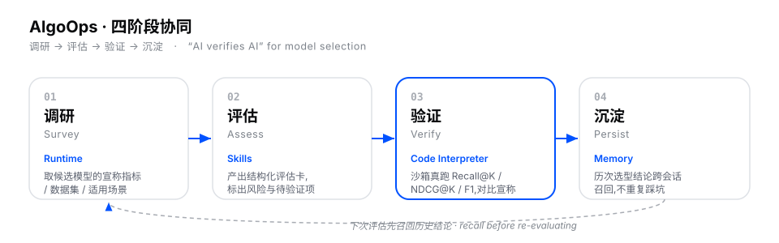
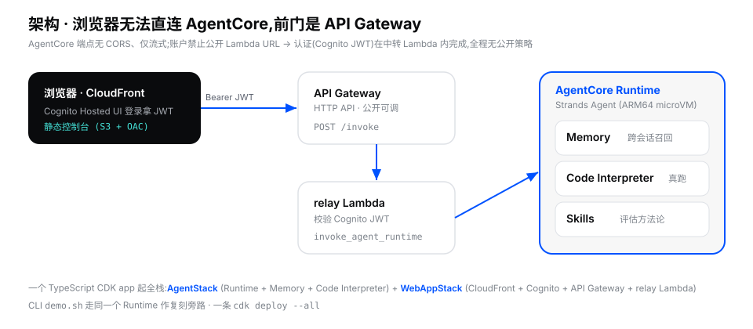
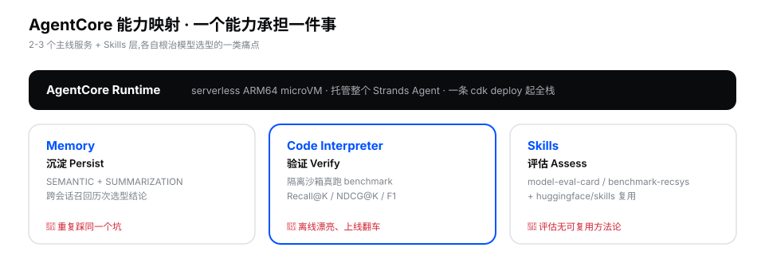
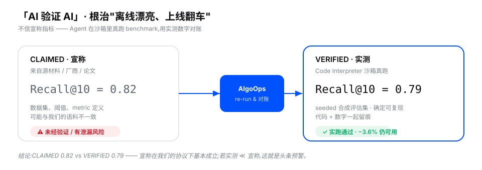

Amazon Bedrock AgentCore · Builder Demo
让 Agent 以「AI 验证 AI」替团队做内部业务的模型选型
按 S 进入演讲者视图 · T 切主题 · ← → 翻页
大家好。今天这个 demo 叫 AlgoOps,算法效能智能体。
它解决一个很具体的工程痛点:团队要给内部的搜索、推荐、标签系统选模型,候选模型一堆,每个都说自己指标多漂亮——但我们都知道,离线漂亮、上线翻车太常见了。
AlgoOps 的核心理念是「AI 验证 AI」:不信宣称指标,让 Agent 在隔离沙箱里真跑一遍 benchmark,用实测数字说话。整套东西跑在 Amazon Bedrock AgentCore 上,一条命令起全栈。
Agenda
离线漂亮、上线翻车 —— 为什么选型这么难
调研 → 评估 → 验证 → 沉淀
AgentCore 三服务 + Skills,一条 cdk deploy
真跑 benchmark + 跨会话召回 + 可泛化
The pain
宣称指标用的是别人的数据集 / 阈值 / metric 定义,跟我们的语料不是一回事。
每个人各凭经验评一遍,换个人、换个项目又从零开始。
上个季度淘汰过的方案,这个季度有人又捡回来评一遍。
AlgoOps:把"评估"做成可复跑、可记忆、可复用的 Agent 工作流。
How it works

AlgoOps 把模型选型拆成四个阶段,每个阶段对应 AgentCore 的一个能力。
调研:取候选模型宣称了什么。评估:激活一个 Skill,产出结构化评估卡,标出风险和待验证项。验证——这是核心——在 Code Interpreter 沙箱里真跑 Recall@K、NDCG、F1,拿实测对账宣称。沉淀:结论存进 Memory,下次评估先召回,不重复踩坑。
注意最后那条虚线回到调研——这是个闭环,记忆让团队越评越聪明。
Architecture

讲一下架构,因为这里有个真实踩过的坑。
浏览器不能直接调 AgentCore——它的端点没有 CORS、而且只支持流式;另外这个账户的安全策略禁止公开 Lambda URL。所以前门用 API Gateway,认证(校验 Cognito 的 JWT)放在中转 Lambda 里做,全程没有任何公开策略,也就不会触发 AppSec 告警。
右边就是 Runtime,里面跑 Strands Agent,挂着 Memory、Code Interpreter、Skills 三块能力。一个 TypeScript CDK app 把这一切起起来。
AgentCore capabilities

Runtime Memory Code Interpreter Skills
The core idea

这是整个 demo 的灵魂。左边是宣称的 Recall@10 = 0.82,来自源材料;我们不信它。
AlgoOps 在沙箱里用一个 seeded 合成评估集真跑一遍,得到实测 0.79——代码和数字一起留痕。结论:宣称在我们的协议下基本成立,差 3.6%,可用。
关键是:如果实测远低于宣称,那就是头条预警——这正是"离线漂亮、上线翻车"被当场抓住的时刻。
现场 demo · 幕一
Verify bge-m3's claimed Recall@10 — run the benchmark and show the actual numbers.
activated skill: benchmark-recsys
VERIFIED Recall@10 = 0.7912
VERIFIED NDCG@10 = 0.6840
CLAIMED 0.82 vs VERIFIED 0.79 — 基本成立 (−3.6%)
现场点"真跑验证"按钮:Agent 激活 benchmark-recsys skill,在 Code Interpreter 沙箱里跑出真实的 Recall@10 / NDCG@10,当场和宣称对账。注意——这不是口说,是沙箱里真跑出来的数字,代码可见。
现场 demo · 幕二
Based on your memory, which models have we evaluated for search / rec / tagging?
| Model | Task | Verified | 结论 |
|---|---|---|---|
| BGE-M3 | search | R@10 0.79 | 采用 |
| SASRec | rec | NDCG 0.17 | 待复核 |
| BERT-tagger | tagging | F1 0.81 | 否决 |
AgentCore Memory(SEMANTIC + SUMMARIZATION)跨会话召回 —— 不重复踩坑。
这一幕最有冲击力:我开一个全新 session,Agent 却准确回忆出之前评过的三个模型和结论。这就是 Memory 的跨会话召回——团队的选型经验沉淀下来了。
Why it matters
Runtime + Memory + Code Interpreter + Skills + CDK 全栈 —— 一行不改
tools / skills / prompts / seed
搜推标签 → 金融 / 生物 / 运维 任意内部业务
harness 的能力来自骨架,领域只是插件。
Reproduce
git clone https://github.com/IanLiYi1996/algoops-demo cd algoops-demo/source/infrastructure npm install && npx cdk deploy --all # Runtime+Memory+CI+Cognito+API GW ./scripts/demo.sh # 或 CLI 旁路复刻演示
Strands Agents SDK TypeScript CDK 18 py + 6 cdk tests ✓
Takeaway
AlgoOps · 算法效能智能体 · Amazon Bedrock AgentCore
github.com/IanLiYi1996/algoops-demo